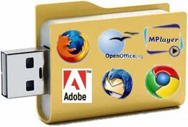

Best Uses For Usb Drives
Hello Guys, today I am going to tell cool hacks for your usb drives. Here are some hacks for usb drives
Install a linux distro
Many different Linux distros will happily run from a USB drive, which means you’re effectively operating a whole computer system packed on to a portable disk—you can take the stick with you wherever you go, along with your saved files and installed apps, and plug it into any computer with a spare USB port to pick up again where you left off.
Take your apps with you
If running a whole new OS sounds a bit too daunting, you can stay in Windows but keep the bulk of your apps on a USB drive—this means they stay out of the way of your main operating system and won’t clutter up the main hard drive unnecessarily. Most popular apps can be run in this way.
The benefits are the same as running Linux from a USB stick: The ability to take your files and apps everywhere you go. As long as you know you’ve got a PC with a spare USB port at your destination, it’s a lot easier to throw a USB stick in your bag than a full laptop. To get started and to see the range of applications on offer, head to the PortableApps.com portal.

Clean up viruses
Should your computer (or one you’ve been called on to fix) get hit by a virus, cleaning up the mess isn’t always straightforward—the more advanced malware programs out there can take steps to make sure they’re difficult to find and resistant to the most common removal techniques.
Some might stop you getting online or even getting into your PC.
That’s where a USB stick clean up kit comes in: Get one or more on-demand scanners on the drive, and you’ve got a portable virus removal tool you can take anywhere.
The likes of Anvi Rescue Disk, ClamWin Portable, Avira PC Cleaner, and Emsisoft Emergency Kit are all free to use and will run happily from a USB drive plugged into the infected machine.
Create a recovery drive
Few tech problems can make your stomach sink like a computer that won’t boot up, but a USB recovery drive can help get a Windows machine back on its feet again.
You do need to get the recovery drive set up in advance for this to work.
To do it search for “create a recovery drive” from the taskbar then pick the top option when it appears.
Select Back up system files to the recovery drive, then Next. After plugging in a USB drive, choose it from the list, and pick Next then Create.
When the process is complete, you’ll have a drive you can boot from in any future emergencies.
Boost the speed of your system
Windows features a technology called ReadyBoost, where a USB drive can be used as a disk cache to speed up read and write times.
It’s not quite as effective or as widely deployed on more modern systems, but it’s still worth a try, and can make a significant difference to performance if you’re dealing with an older Windows laptop or desktop.
To get started with ReadyBoost, pop your USB drive into a Windows computer, then open up File Explorer, right-click on the drive, and choose Properties.
Open the ReadyBoost tab and follow the instructions on screen to prepare the drive—the dialog box should tell you if the drive and your system are suitable for ReadyBoost, and if you’ll see any benefit.